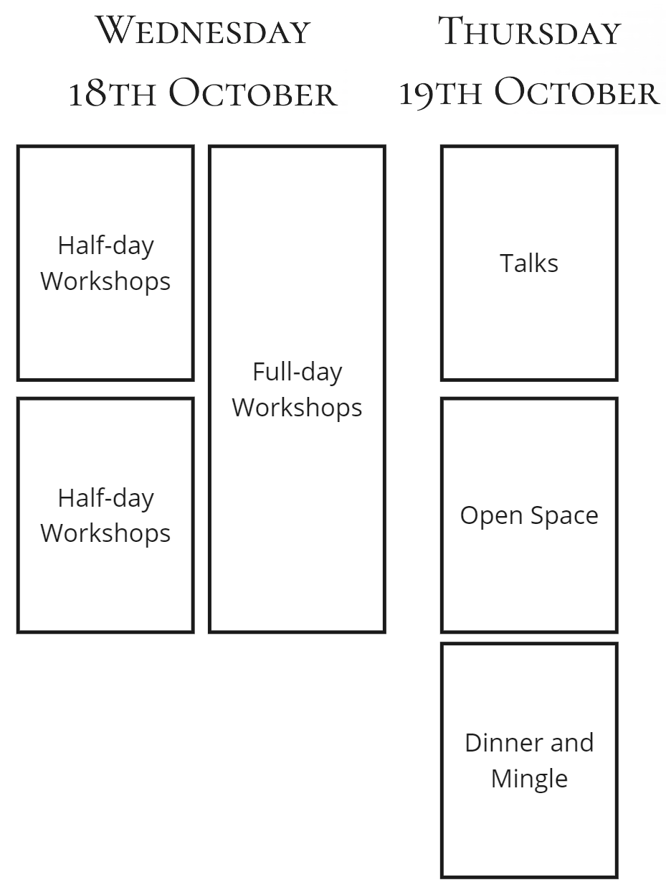
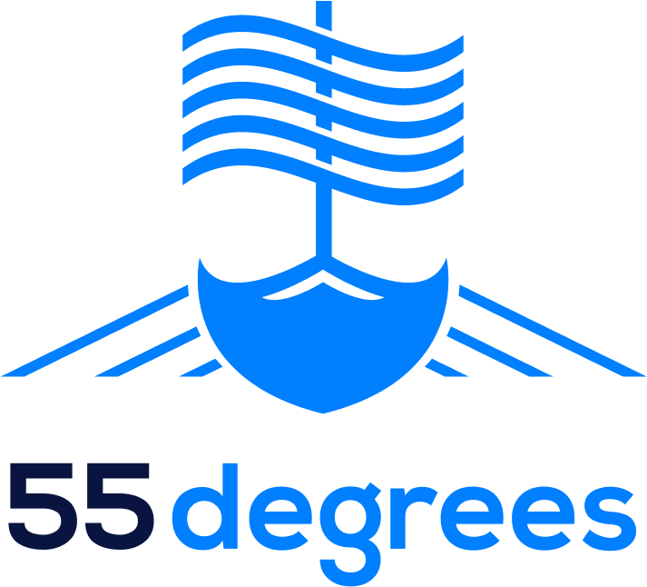
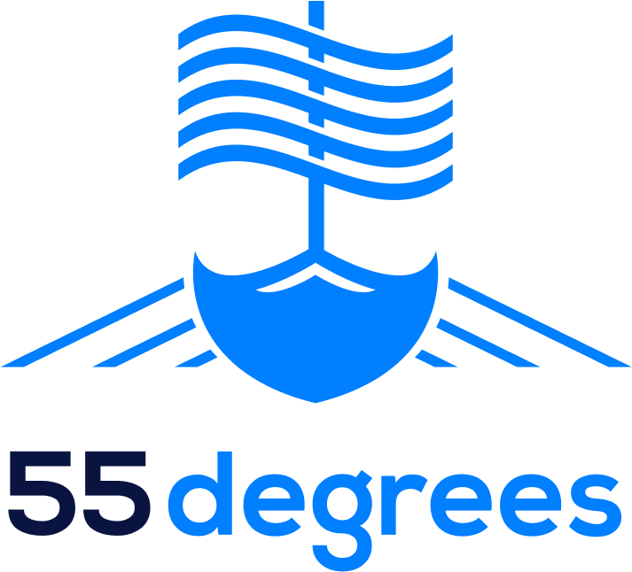

Sign up!
Because we are a small, non-profit, organization we must enforce a strict no cancellation policy. No return on tickets to the event. Program subject to change at any time.
23
Because we are a small, non-profit, organization we must enforce a strict no cancellation policy. No return on tickets to the event. Program subject to change at any time.
This will of course most easily relate to the digital industry, but we hope to broaden the focus to other areas. We want our speakers and attendees to share tools across our fields, both for improving your own flow but also for understanding other area of expertise in the product process.
We want to invite not only developers but, project managers, marketing professionals, sales people, and many others. Anyone with passion about their products!
Remote working existed before covid, but covid made it more widespread. With extensive polling of workers worldwide, the answer is clear: the future of work is choice. For organizations to survive and thrive in the modern world, we want to be able to work in a “remote first” way: working online as if we were in the office together.
In this interactive presentation, tailored for developers who may think, "We've been working remotely for years now; what else is there to learn?" we'll dive deeper into the nuances of remote work and explore innovative strategies for seamless collaboration at a distance. We'll go beyond the basics and delve into advanced techniques digital nomads, virtual entrepreneurs, and global organizations use to foster a truly connected remote workforce.
Lisette Sutherland is the Director of Collaboration Superpowers, a company that helps people work together from anywhere through online workshops. She is the author of the Work Together Anywhere Handbook, the host of a podcast featuring interviews with remote-working experts, and a facilitator of workshops on a variety of remote working topics.
Gunther Verheyen, independent Scrum Caretaker, observes how Scrum is adopted widely and massively around the world. Although the global communities of Scrum practitioners have achieved a lot, Gunther feels that many Scrum adoptions, and therefore Scrum itself have ended up in a status-quo anyhow. Without people questioning or challenging this situation deeply. If Scrum Masters have stopped challenging the status-quo, who else is helping and inspiring our organizations to shift from the industrial (Taylorist) ways to the Agile paradigm?
The closing quote of Gunther's book “Scrum - A Pocket Guide” is "The future state of Scrum will no longer be called ‘Scrum’. What we now call Scrum will have become the norm, and organizations have re-emerged around it.” Building on this quote, Gunther shares his view on why it is important to move (your) Scrum downfield and what tactics are to do so.

Gunther Verheyen calls himself an independent Scrum Caretaker on a journey of humanizing the workplace with Scrum. He is a long-time Scrum practitioner who started applying Scrum in 2003. He has published two acclaimed books about Scrum and was the partner of Ken Schwaber (co-creator of Scrum) as Director of the “Professional Scrum” series at Scrum.org.
A workflow is a process in which work moves through as it is completed – at least, that's what the name suggests. Based on my experience working with and talking to teams, workflows don't always facilitate flow. Instead, they are often built to function as ways to keep everyone at 100% capacity and/or act as mazes with many places where you can get lost for quite some time. The problem is that's usually not the intent.
In this session, you'll get a refresher on the point of workflows in general, learn some tips on a better mindset to use when building them, and get advice on avoiding creating workflows that get in the way of, rather than facilitate, flow.
Julia leads 55 Degrees AB, a Lean/Agile-focused software company in Malmö. Also a professional trainer, Julia is a LinkedIn Learning course author, a ProKanban.org advisory board member, and a past course steward for Scrum.org. No matter the task, Julia's ultimate goal is helping people get more done with less stress.
In this talk, designed for product managers and those new to product discovery, we will delve into the practical aspects of successful product discovery. We will discuss actionable processes to understand user needs, define problems, generate innovative ideas, and prioritize features and experiments; explore techniques to run continuous discovery alongside delivery efforts and strike the right balance and talk about how to integrate discovery seamlessly within an agile development process and foster collaboration among teams.
Stefan Dorfling, Senior Product Management Consultant at Product People, has 5+ years of experience in Product Management. He has worked closely with both B2B and B2C clients such as FREE NOW (mobility), Sastrify (SaaS), and SmallPDF (web tools). He has extensive experience in User Research, UX/UI design, market research, product vision and strategy and roadmapping.
In addition to our usual conference we offer optional add-ons of intimate and interactive workshops with our keynote speakers.
Gunther stated in his book Scrum - A Pocket Guide: “Scrum is more about behavior than it is about process”. Gunther developed the Scrum Pocket Class about The Scrum Values to explore how its five core values offer a richer view on Scrum: commitment, focus, openness, respect and courage. Because Scrum is a framework of rules, principles and...values. And values drive behavior.
Gunther developed the Scrum Pocket Class about Scrum in the Large to explore how even in the large it is possible to keep the rules of the game intact. The participants explore how the rules are independent of the scale at which Scrum is organized. It is a first step to help people and organizations re-think their structures around Scrum and upgrade their organization accordingly.
This workshop will teach attendees why to stop settling for the workflow they have and learn how to create the workflow they really need.
A workflow is a process in which work moves through as it is completed. However, in most teams I've worked with, the workflow doesn't really help facilitate flow. Instead, they end up as mazes with many places where you can get lost for quite some time, or it leads to making sure everyone is working at 100% capacity. This drives behaviours and insights that are damaging to the people, work and company.
Increase the feeling of togetherness on your remote team by creating a productive and enjoyable virtual & hybrid workspace.
Remote communication is the #1 challenge for virtual teams: how do we deliver the same results that we deliver when we work together in the same room?
The Work Together Anywhere Workshop is a highly interactive experience that gives managers, coaches, and knowledge workers a roadmap for successful remote and hybrid working. You will walk away with an action plan of techniques and tools you can try immediately.
An interactive workshop designed to empower product managers and equip them with practical skills for successful product discovery.
This hands-on session builds upon the Product Discovery 101 presentation, allowing participants to dive deeper into the key concepts and apply them in a collaborative setting.
We're working on the details, but as an overview it looks like below.

Because we are a small, non-profit, organization we must enforce a strict no cancellation policy. No return on tickets to the event. Program subject to change at any time.
 

If you are interested in being a sponsor, mail: brewingagile@scrumbeers.com
 Rona Bredahl
Rona Bredahl
 Jeff Campbell
Jeff Campbell
 Patrik Gustafsson
Patrik Gustafsson
 Rickard Lantz
Rickard Lantz
 Fredrik Wendt
Fredrik Wendt